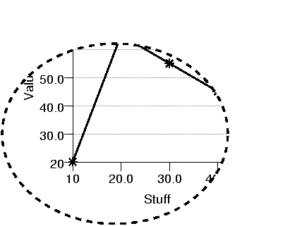

| PyChart |
| PyChart |
A rectangle, polygon, or ellipsis can be used to define a clipping
region. Any drawing commands ( see Section 21) issued afterward are
confined in the region. You can even nest multiple clipping regions,
in which case, drawings will be clipped to the intersection of the
regions. canvas.endclip() ends the clipping. Clipping commands
and endclip() must nest properly.

Clipping test
Below is the source code that produces the above chart. ../demos/cliptest.py
from pychart import * can = canvas.default_canvas() data = [(10, 20), (20, 65), (30, 55), (40, 45)] # tic_angle is the angle X values are displayed below the axis. xaxis = axis.X(label="Stuff") yaxis = axis.Y(label="Value") ar = area.T(x_axis=xaxis, y_axis=yaxis) plot = line_plot.T(label="foo", data=data, xcol=0, ycol=1, tick_mark=tick_mark.star) ar.add_plot(plot) can.ellipsis(line_style.T(width=1.5,dash=(4,4)), None, 30, 20, 80, 0.8) can.clip_ellipsis(30, 20, 80, 0.8) ar.draw(can) can.endclip()
The following canvas.T methods are used to control clipping:
| x1, y1, x2, y2) |
| x, y, radius, y_elongation) |
| [(x1,y2),(x2,y2), ..., (xn, yn)]) |
| ) |
| PyChart |